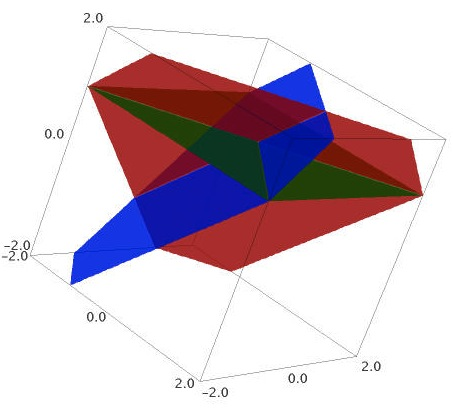

Welcome
Welcome to the course web page for the Spring 2012 manifestation of MA3120: Linear Algebra at Plymouth State University.
What is this course all about?
This courses offers an introduction to the field of linear algebra. According to Wikipedia:
Linear algebra is a branch of mathematics that studies vector spaces, also called linear spaces, along with linear functions that input one vector and output another. Such functions are called linear maps (or linear transformations or linear operators) and can be represented by matrices if a basis is given. Thus matrix theory is often considered as a part of linear algebra.
This course will examine properties of systems of linear equations, vector spaces, linear independence, dimension, linear transformations, matrices, determinants, eigenvalues, and eigenvectors. If you want to learn more about these topic, as well as explore others, Wikipedia has a very nice list of linear algebra topics. For more details, see the syllabus.
Textbook
We will be using the open-source textbook A First Course in Linear Algebra by Rob Beezer (University of Puget Sound). This book is available for free from the author's webpage. There are many formats available for the book: PDF, PDF for Kindle, HTML, etc. You can see the various PDF versions by clicking on the "Download" link and the HTML versions by clicking on "Online Editions." For those of you that prefer a physical book, you also have the option of purchasing a copy for approximately $30 from Lulu. You might also be interested in ordering the Archetypes workbook that accompanies the text. This smaller book contains standard examples and summaries of concepts. It is available on Lulu for $8.90. Note that the Archetypes workbook is also available for free as part of the PDF or HTML that is available on the author's webpage.
I expect you to be reading the textbook. I will not be covering every detail of the textbook and the only way to achieve a sufficient understanding of the material is to be digesting the reading in a meaningful way. You should be seeking clarification about the material in the textbook whenever necessary by asking questions in class or posting questions to the course forum.
Getting Help
There are many resources available to get help. First, I recommend that you work on homework in groups as much as possible and to come see me whenever necessary. Also, you are strongly encouraged to ask questions in the course forum on our Moodle page page, as I will post comments there for all to benefit from. To effectively post to the course forum, you will need to learn the basics of LaTeX, the standard language for typesetting in the mathematics community. See the Quick LaTeX guide for help with $\LaTeX$. If you need additional help with $\LaTeX$, post a question in the course forum on our Moodle page.
You can also visit the Math Activity Center, which is located in Hyde 351. This student-run organization provides peer tutoring services for most 1000 and 2000 level math courses and some 3000 level courses. Tutors are typically math majors interested in teaching math and practicing their instructional skills. You can drop in anytime during open hours.
Lastly, you can always .